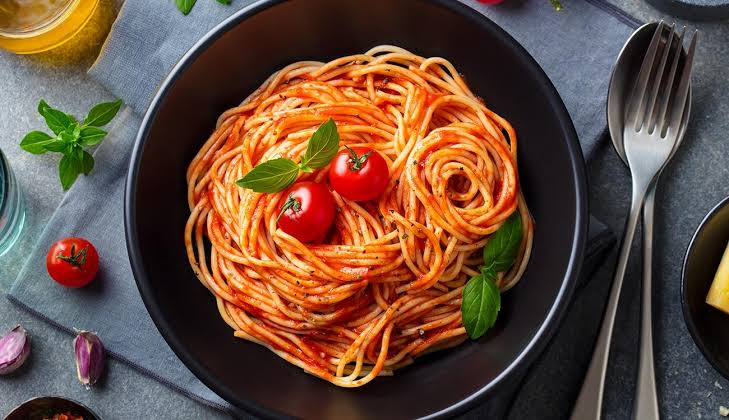

Macarrão ao Molho Vermelho
Molho pronto com um toque de açúcar para cortar a acidez. Pronto em 10 minutos.
Tempo de preparo
10 minutos
Louça suja
2 panelas
Porções
2 porções
Dificuldade
Fácil
Imagem da receita

Vídeo do preparo
Ingredientes
- 250 g de macarrão (espaguete ou parafuso)
- 1 lata de molho de tomate (340 g)
- 2 dentes de alho picados
- 1 colher de sopa de óleo ou azeite
- 1 pitada de açúcar
- Sal a gosto
- 1 xícara da água do cozimento
- Queijo ralado a gosto (opcional)
- Manjericão fresco (opcional)
Modo de preparo
- Coloque 2 litros de água para ferver com uma colher de sal.
- Cozinhe o macarrão até ficar al dente, mexendo de vez em quando para não grudar. Reserve 1 xícara da água do cozimento antes de escorrer.
- Enquanto o macarrão cozinha, aqueça o óleo em uma panela e doure o alho picado por 30 segundos, em fogo baixo.
- Junte o molho de tomate, a pitada de açúcar e o sal. Cozinhe por 3 minutos em fogo baixo, mexendo.
- Escorra o macarrão e misture ao molho na própria panela.
- Acrescente a água do cozimento aos poucos até o molho envolver todo o macarrão.
- Desligue o fogo, finalize com queijo ralado e manjericão e sirva imediatamente.
Dica: a pitada de açúcar corta a acidez do molho. Se o molho engrossar demais, use a água do cozimento para soltar — ela tem amido e gruda melhor que água comum.